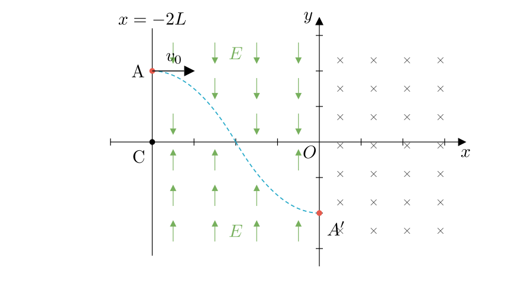
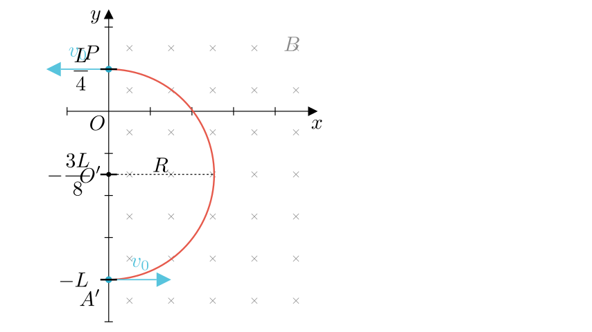
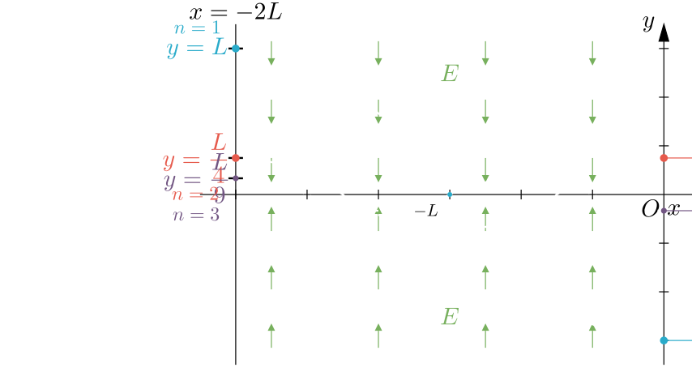

Problem Statement:
As shown in the rectangular coordinate system, a uniform magnetic field perpendicular to the paper and pointing inward exists in the 1st and 4th quadrants ($x > 0$). In the 2nd and 3rd quadrants between $x=-2L$ and the $y$-axis, there exist uniform electric fields of equal magnitude but opposite directions; the field directions are as shown in the figure (downward in Q2, upward in Q3). Particles with charge $+q$ and mass $m$ are continuously distributed on the line segment from $A(-2L, L)$ to $C(-2L, 0)$. Starting from $t=0$, these charged particles are emitted sequentially with the same velocity $v_0$ along the positive $x$-axis. The particle emitted from point $A$ follows the trajectory shown in the figure (the intersection of the trajectory with the $x$-axis is the midpoint of $OC$) and enters the magnetic field from the $y$-axis moving exactly along the positive $x$-axis direction. Gravity and interactions between particles are neglected.
Solution Approach: We will solve this step-by-step. First, we analyze the motion in the electric field to find $E$. Then, we track the particle's circular motion in the magnetic field to find its exit point. Finally, we analyze the return trip through the electric field and generalize the condition for other particles.

Part 1: Calculating Electric Field Strength $E$
Let's analyze the motion of the particle from point $A(-2L, L)$ to the midpoint of $OC$. The midpoint of $OC$ is at $(-L, 0)$.
The particle moves with constant velocity $v_0$ in the $x$-direction. The time taken to travel from $x = -2L$ to $x = -L$ is: $$t_1 = \frac{\Delta x}{v_0} = \frac{L}{v_0}$$
In the $y$-direction (Quadrant II), the electric field is downward. The particle accelerates downwards with acceleration $a = \frac{qE}{m}$. The vertical displacement is $y = L$ to $y = 0$, so $\Delta y = L$. Using the kinematic equation $y = \frac{1}{2}at^2$: $$L = \frac{1}{2} \left( \frac{qE}{m} \right) t_1^2$$
Substituting $t_1 = \frac{L}{v_0}$: $$L = \frac{1}{2} \frac{qE}{m} \left( \frac{L}{v_0} \right)^2$$ $$L = \frac{qE L^2}{2m v_0^2}$$
Solving for $E$: $$E = \frac{2mv_0^2}{qL}$$
Analyzing the Entry into the Magnetic Field: The problem states the particle enters the magnetic field along the $+x$ direction. This implies its vertical velocity $v_y$ is zero at $x=0$. The particle travels from $x=-L$ to $x=0$ in Quadrant III ($y<0$). Here, the electric field is upward, providing an upward force that decelerates the downward vertical velocity. By symmetry, since the distance ($L$) and field magnitude are the same, the particle drops another distance $L$ while decelerating to $v_y=0$. Therefore, the entry point $A'$ is at $(0, -L)$.

Part 2: Motion in the Magnetic Field
The particle enters the magnetic field at $A'(0, -L)$ with velocity $v_0$ along $+x$. The Lorentz force $F = qvB$ provides the centripetal force. Since $v$ is right ($+x$) and $B$ is inward ($-z$), the force is UP ($+y$). The particle curves upward.
Radius of curvature: $$R = \frac{mv_0}{qB}$$ Substitute $B = \frac{8mv_0}{5qL}$: $$R = \frac{mv_0}{q \left( \frac{8mv_0}{5qL} \right)} = \frac{5L}{8}$$
The center of the circular path is located at $(0, -L + R)$. $$y_{center} = -L + \frac{5L}{8} = -\frac{3L}{8}$$ So the circle equation is $x^2 + (y + \frac{3L}{8})^2 = R^2$.
The particle exits the magnetic field when it hits the $y$-axis ($x=0$) again. $$(y + \frac{3L}{8})^2 = \left( \frac{5L}{8} \right)^2$$ $$y + \frac{3L}{8} = \pm \frac{5L}{8}$$ Taking the positive root (since the negative root is the entry point): $$y = \frac{5L}{8} - \frac{3L}{8} = \frac{2L}{8} = \frac{L}{4}$$
So, the particle exits the magnetic field at point $P(0, \frac{L}{4})$ with velocity $-v_0$ (moving left).
Return Trip to $x = -2L$: The particle re-enters the electric field at $(0, \frac{L}{4})$ moving left. In Q2 ($y>0$), the force is downward. The particle performs projectile-like motion. Time to cross $y=0$: Using $y = \frac{1}{2}at^2$, where $y_{start} = L/4$. From Part 1, we know $\frac{1}{2}a(\frac{L}{v_0})^2 = L$. So, $\frac{L}{4} = \frac{1}{2} a t^2 \implies t = \frac{1}{2} \frac{L}{v_0}$. Horizontal distance traveled: $x = v_0 t = L/2$. It crosses the axis at $x = -L/2$.
In Q3 ($y<0$), the force is upward. The particle decelerates its vertical drop, stops vertically, and accelerates up. This motion is symmetric. It takes time $t = \frac{L}{v_0}$ to perform a full "dip" (down and back up) covering horizontal distance $L$. So at $x = -L/2 - L = -1.5L$, it crosses $y=0$ again moving upwards.
Finally, from $x = -1.5L$ to $x = -2L$ (Distance $0.5L$), it moves in Q2 ($y>0$) against the downward force. This is the reverse of the initial descent. It rises to height $y = L/4$.
Answer (2): The coordinate is $(-2L, \frac{L}{4})$.

Part 3: Other Possible Positions
We require the particle to enter the magnetic field (at $x=0$) moving exactly along the $+x$ direction. This means the vertical velocity $v_y$ must be zero at $x=0$. The total time to travel from $x=-2L$ to $x=0$ is fixed at $T = \frac{2L}{v_0}$.
The vertical motion consists of segments of constant acceleration $a$ (downwards in Q2, upwards in Q3). For the final vertical velocity to be zero, the total impulse must be zero, meaning the particle must spend equal time in the downward-field region ($y>0$) and the upward-field region ($y<0$).
Let $\tau$ be the time to fall from the starting height $y_n$ to $y=0$. The motion is periodic. The particle starts at a peak ($v_y=0$), crosses the axis, reaches a trough ($v_y=0$), crosses back, reaches a peak, etc. The time between a peak and the next zero-velocity point (a trough) is $2\tau$. The total time $T$ must be an integer multiple of this half-period $2\tau$ to ensure $v_y=0$ at the end.
$$T = n(2\tau) \quad \text{where } n = 1, 2, 3, \dots$$ $$\frac{2L}{v_0} = 2n\tau \implies \tau = \frac{L}{n v_0}$$
The starting height $y_n$ corresponds to the distance covered in time $\tau$ under acceleration $a$: $$y_n = \frac{1}{2} a \tau^2 = \frac{1}{2} a \left( \frac{L}{n v_0} \right)^2$$ $$y_n = \frac{1}{n^2} \left[ \frac{1}{2} a \left( \frac{L}{v_0} \right)^2 \right]$$
From Part 1, we know the term in the brackets is equal to the original height $L$. $$y_n = \frac{L}{n^2}$$
Conclusion: The particles must be located at coordinates $(-2L, \frac{L}{n^2})$ where $n = 1, 2, 3, \dots$. (Note: $n=1$ corresponds to the original point $A$).
Final Verification: 1. $E = \frac{2mv_0^2}{qL}$. Check. 2. Return coordinate $(-2L, L/4)$. Check. 3. Allowed positions $y = L/n^2$. Check.